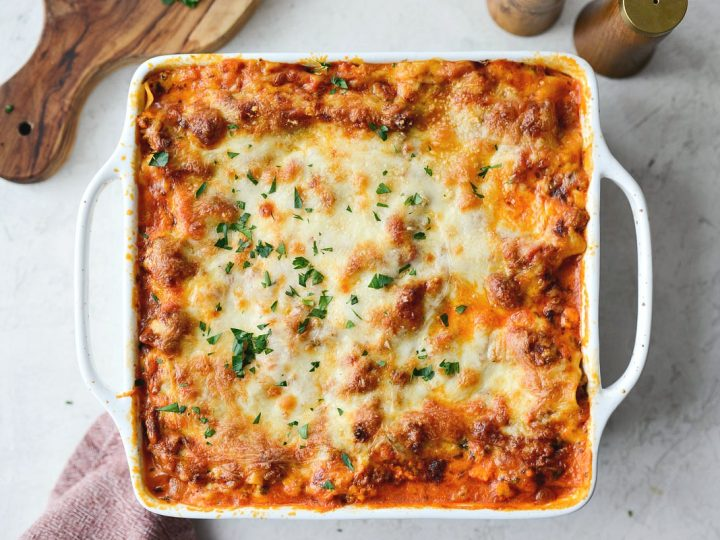

Lasagna

Description
The ultimate comfort food, this lasagna is loaded with meat and cheesy goodness. Easy to make, this lasagna is perfect for everything from casual get-togethers to special occasions to Sunday dinner.
Ingredients
Ragu
- 1 tbsp olive oil
- 1 onion
- 1 carrot
- 1 stick of celery
- 500gr beef mince
- 8oogr crushed tomato
- 2 tbsp tomato paste
- 2 beef bouillon cubes
- 2 bay leaves
- dried oregano
- 2 tsp Worcestershire sauce
- salt and black pepper
Besciamella Sauce
- 50g butter
- 1/2 cup flour
- 2 cups milk
- 200g shredded cheese
- nutmeg
- salt and pepper
Lasagna
- 200g lasagna pasta
- chopped basil or parsley
- 100g shredded cheese
Steps
Ragu
- Heat oil and cook onion celery and carrots for ten minutes until softened.
- Add the beef and cook until brown
- Add remaining Ragu ingredients, stir and cook under the lid for 2 hours. Stir now and then. Then remove the lid and simmer for 30 minutes.
Besciamella Sauce
- Warm up milk.
- Melt butter in saucepan, add flour and mix constantly for 1 minute.
- Pour about 1 cup of the milk in, mixing as you go to incorporate into the flour mixture. Once mostly lump free, add remaining milk.
- Stir occasionally at first then regularly after a few minutes until sauce thickens - about 5 - 8 minutes.
- Remove from heat, add cheese, nutmeg, salt and pepper. Mix until the cheese is melted. The Sauce should be thick but still easily pourable - the consistency of heavy cream.
Assemble
- Preheat oven to 180°C.
- Smear a bit of Ragu on the base, then cover with lasagna sheets. Tear sheets to fit.
- Spread over 2 1/2 cups of Ragu (enough to cover sheets), then drizzle over 1 cup of Besciamella Sauce.
- Top with lasagna sheets. Spread with another 2 1/2 cups of Ragu, then 1 cup of Cheese Sauce. Top with lasagna sheets then repeat 1 more time.
- Top with a 4th layer of lasagna sheets, then pour over the remaining Besciamella Sauce.
- Sprinkle with shredded cheese, then bake for 25 minutes or until golden and bubbling.
- Stand for 5 to 10 minutes before cutting and serving, garnished with basil or parsley if desired.